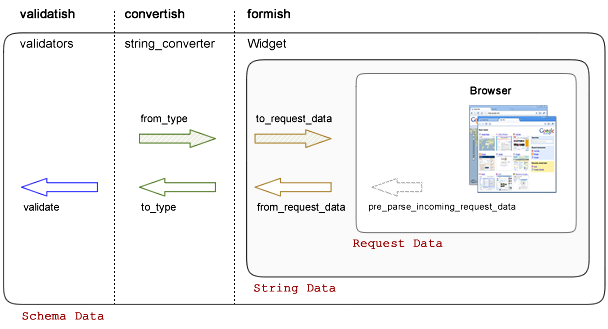

Introducing Formish¶
Note
this introduction was written for a blog post. Please send any feedback or wishes for expansion to developers@ish.io
Matt Goodall and I had previously worked with the Nevow web framework for a lot of our software development work. We had developed a form library, called Formal, that had been reasonably well accepted and that had worked extremely well for most of our applications. However, working with Nevow/Twisted meant that there were a lot of things we couldn’t do that we would have liked.
When we moved over to a new project, one of the things we wanted to bring with us was the way we worked with forms. The library, now called formish, is just about ready for production use and I wanted to demonstrate some of its features and discuss some of the philosophy behind it.
A big goal for the form library was to break the problem down into it’s discrete components. These being
- Templating
- Validation
- Data Schema
- Data Conversion
A library that addressed each of these should work independently of each other and hopefully could be used in a project that had nothing to do with forms (apart from the templating bit).
Here is a diagram that tries to show the data flow through the widget structure.
We’ve tried to keep the data flow as layered as possible. In this diagram you can see the rounded boxes represent the changing data representation and the vertical dotted lines the different library code that handles transformations. Don’t worry too much about the ‘pre_parse_request’ but at the moment, its used to pre-munge some aspects request data to make the process as symmetric as possible,
Data Schema¶
Any form has to work on a data structure of some sort and it makes sense for this not to be tied in any way to web data. We built a fairly light weight schema library called schemaish which defines data structures and allows metadata (such as field titles and descriptions) to be assigned. Validation can also be added to each node in a schema (see later). Here are a few examples of creating schema structures.
>>> import schemaish
>>> schema_item = schemaish.Integer()
>>> schema_item
schemaish.Integer()
>>> import schemaish, validatish
>>> my_schema = schemaish.Structure()
>>> my_schema.add( 'name', schemaish.String() )
>>> my_schema.add( 'age', schemaish.Integer() )
>>> my_schema
schemaish.Structure("name": schemaish.String(), "age": schemaish.Integer())
>>> class MyStructure(schemaish.Structure):
... name = schemaish.String()
... age = schemaish.Integer()
...
>>> my_schema = MyStructure()
>>> my_schema
schemaish.Structure("name": schemaish.String(), "age": schemaish.Integer())
Each of these schemas can be validated, however we don’t have any validators yet. We looked for a reusable validator library that was simple in execution (i.e. just callable!) but there weren’t any that really fitted the bill (we tried FormEncode but it seems to conflate validation and conversion, which we don’t think is quite right - personal opinion of course)).
Validatish¶
Validation should be simple, just call a validator with a value and it should either succeed or raise an exception. Obviously some validators need to be configured so you should either pass in some configuration variables to a function or instantiate a validator object that has a __call__ method.
In our validatish package, we created two submodules with the function validators in one (validatish.validate) and the class validators (which use the function validatos internally) in another (validatish.validator).
Here is an example of a function based validator
>>> import validatish
>>> def is_string(v):
... """ checks that the value is an instance of basestring """
... if v is None:
... return
... msg = "must be a string"
... if not isinstance(v,basestring):
... raise validatish.Invalid(msg)
...
>>> is_string(1)
Traceback (most recent call last):
Invalid: must be a string
>>> is_string('foo')
And here is an example of its matching class based version. We recommend using the class based validators all of the time to keep consistency (you can’t use function based validators if the validator needs configuring - schemaish expects a callable that takes a single argument).
>>> class String():
... def __call__(self, v):
... is_string(v)
...
>>> v = String()
>>> v(1)
Traceback (most recent call last):
Invalid: must be a string
>>> v('foo')
Note
If a value is None, then the validation is not applied (as this would imply a required constraint also).
So, now we can pass a validator into one of our schema instances
>>> import schemaish
>>> from validatish import validator
>>> schema = schemaish.String(validator=validator.String())
>>> try:
... schema.validate(10)
... print 'success!'
... except schemaish.Invalid, e:
... print e.error_dict
...
{'': validatish.Invalid("must be a string", validator=validatish.String())}
>>> try:
... schema.validate('foo')
... print 'success!'
... except schemaish.Invalid, e:
... print e.error_dict
...
success!
Note
Validators do not return any value on success (or more correctly they return None).
If we apply validators to multiple items in a structure, we can validate them all in one go.
>>> import schemaish
>>> from validatish import validator
>>> schema = schemaish.Structure()
>>> schema.add('name', schemaish.String(validator=validator.String()))
>>> schema.add('age', schemaish.Integer(validator=validator.Range(min=18)))
>>> try:
... schema.validate({'name': 6, 'age': 17})
... print 'success!'
... except schemaish.Invalid, e:
... print e.error_dict
...
{'age': validatish.Invalid("must be greater than or equal to 18", validator=validatish.Range(min=18, max=None)), 'name': validatish.Invalid("must be a string", validator=validatish.String())}
>>> try:
... schema.validate({'name': 'John Drake', 'age': 28})
... print 'success!'
... except schemaish.Invalid, e:
... print 'error',e.error_dict
...
success!
Because validators are just callables, they are very easy to write and adding validators to groups of items or sequences is simple. We’ve implemented Any and All validators (thanks Ian!) that work similarly to FormEncode’s to allow grouping of rules. We’re hoping to expand on the validators but not until we have a requirement (either from ourselves or from someone hoping to use the package). We’ve learned from experience to plan ahead but not to build ahead of requirements.
The Form and the Widget¶
So far, everythig we’ve shown has had nothing to do with forms.. Let’s change that. First of all we need to define the form. This is fairly simple with formish because most of the work has been done in schemaish.
Using the form definition with age and name from above, we create a form by passing in the schema.
>>> import formish
>>> form = formish.Form(schema)
and that is it... if you want to render the form now, you just call it (we’ve implemented a default mako renderer for testing).
>>> form()
'\n<form id="form" action="" class="formish-form" method="post" enctype="multipart/form-data" accept-charset="utf-8">\n\n <input type="hidden" name="_charset_" />\n <input type="hidden" name="__formish_form__" value="form" />\n\n<div id="form-name-field" class="field string input">\n\n<label for="form-name">Name</label>\n\n\n<div class="inputs">\n\n<input id="form-name" type="text" name="name" value="" />\n\n</div>\n\n\n\n\n\n</div>\n\n<div id="form-age-field" class="field integer input">\n\n<label for="form-age">Age</label>\n\n\n<div class="inputs">\n\n<input id="form-age" type="text" name="age" value="" />\n\n</div>\n\n\n\n\n\n</div>\n\n\n <div class="actions">\n <input type="submit" id="form-action-submit" name="submit" value="Submit" />\n </div>\n\n</form>\n\n'
Lets tidy that up a little
<form id="form" action="" class="form-form" method="post" enctype="multipart/form-data" accept-charset="utf-8">
<input type="hidden" name="_charset_" />
<input type="hidden" name="__formish_form__" value="form" />
<div id="form-name-field" class="field string input">
<label for="form-name">Name</label>
<div class="inputs">
<input id="form-name" type="text" name="name" value="" />
</div>
<span class="error"></span>
</div>
<div id="form-age-field" class="field integer input">
<label for="form-age">Age</label>
<div class="inputs">
<input id="form-age" type="text" name="age" value="" />
</div>
<span class="error"></span>
</div>
<div class="actions">
<input type="submit" id="form-action-submit" name="submit" value="Submit" />
</div>
</form>
Without defining any widgets, formish just uses some defaults. Let’s take a look at the default widget to find out what it is doing.
class Widget(object):
type = None
template = None
default_value = ['']
def __init__(self, **k):
self.css_class = k.get('css_class', None)
self.empty = k.get('empty',None)
self.readonly = k.get('readonly',False)
self.converter_options = k.get('converter_options', {})
if not self.converter_options.has_key('delimiter'):
self.converter_options['delimiter'] = ','
def to_request_data(self, field, data):
if data is None:
return ['']
string_data = string_converter(field.attr).from_type(data, converter_options=self.converter_options)
return [string_data]
def pre_parse_incoming_request_data(self, field, request_data):
return request_data or self.default_value
def from_request_data(self, field, request_data):
string_data = request_data[0]
if string_data == '':
return self.empty
return string_converter(field.attr).to_type(string_data, converter_options=self.converter_options)
This is the base class which shows how widgets work. First of all we have a couple of variables to do with converter options (which we’ll come back to in a moment). The four class methods are at the hear of formish though.
to_request_data¶
Before a widget is rendered, the input data is converted from its schema type to raw request data. The data passed to to_request_data is just the fields data.
from_request_data¶
Takes the request data for the field and converts it to the schema type.
Oh.. I left out one..
pre_parse_incoming_request_data¶
When a field is submitted, the request data can be munged to try to enforce some sort of symmetry between input request data and output request data. This is only really used for file uploads where the field storage is extracted to a temporary location before passing the request data to convert. So, for most cases just ignore this.
Convertish¶
You can see from the example that the main conversion process is done using string_converter. This is one of the converter types in convertish and maps any of the schemaish types into a consistent string representation. It does so using simplegeneric and each string_converter implements a from_type and a to_type. For example..
class NumberToStringConverter(Converter):
cast = None
type_string = 'number'
def from_type(self, value, converter_options={}):
if value is None:
return None
return str(value)
def to_type(self, value, converter_options={}):
if value is None:
return None
# "Cast" the value to the correct type. For some strange reason,
# Python's decimal.Decimal type raises an ArithmeticError when it's
# given a dodgy value.
value = value.strip()
try:
value = self.cast(value)
except (ValueError, ArithmeticError):
raise ConvertError("Not a valid %s"%self.type_string)
return value
So we short circuit None values [1], strip the data and cast it to the right type and raise a conversion exception if it fails.
The widget templates¶
So we now have a form defined and an example of a simple widget. Let’s take a look at how formish renders its widgets, the bits involved in creating a form. We render a form by calling it so form() produces the templated output. Calling a form just passes the form to the form.html template which is as follows. We only have mako templates at the minute but we’ve designed formish with simple templating features in mind so adding other templating langauges should be simple..
form.html
${form.header()|n}
${form.metadata()|n}
${form.fields()|n}
${form.actions()|n}
${form.footer()|n}
So the form template just calls each individual part. Here are the templates for each part (I’ve combined them together and separated them by comments to save on space).
form/header.html
<%
if form.action_url:
action_url = form.action_url
else:
action_url = ''
if form.name:
id = 'id="%s" '%form.name
else:
id = ''
if form._has_upload_fields():
enctype = ' enctype="multipart/form-data"'
else:
enctype = ''
all_classes = []
all_classes.extend( form.classes )
if form.errors and 'error' not in form.classes:
form.classes.append('error')
classes_string = ' '.join(form.classes)
%>
<form ${id|n}action="${action_url}" class="${classes_string}" method="${form.method.lower()}"${enctype|n} accept-charset="utf-8">
The form header ensures we have the correct classes and id and also adds an error class if there are any errors on the form. To make things simpler, we only use multipart data if there are file uploads on the form.
form/metadata.html
% if form.include_charset:
<div class="hidden"><input type="hidden" name="_charset_" /></div>
% endif
% if form.name:
<div class="hidden"><input type="hidden" name="__formish_form__" value="${form.name}" /></div>
% endif
This conditionally adds hidden fields for the form name and charset
form/fields.html
%if fields is not None:
%for f in fields:
${form[f]()|n}
%endfor
%else:
%for f in form.fields:
${f()|n}
%endfor
%endif
form/actions.html
<div class="actions">
%for action in form._actions:
<%
if action.value is None:
value = ''
else:
value = ' value="%s"'%action.value
if action.name is None:
name = ''
else:
name = ' name="%s"'%action.name
form_id = []
if form.name:
form_id.append(form.name)
form_id.append('action')
if action.name:
form_id.append(action.name)
form_id = '-'.join(form_id)
%>
<input type="submit" id="${form_id}"${name|n}${value|n} />
%endfor
</div>
form/footer.html
</form>
The most complicated part is probably the actions because of the default submit action applied if no explicit actions are give.
Most values are available as attributes on the form such as form.name and action.label.
More interesting is how each field is rendered.
<div id="${field.cssname}-field" class="${field.classes}">
${field.label()|n}
${field.inputs()|n}
${field.error()|n}
${field.description()|n}
</div>
So each field is built in the same way as the main form. Here are the parst used.
field_label.html
<%page args="field" />
% if field.widget._template != 'Hidden':
<label for="${field.cssname}">${field.title}</label>
%endif
field_inputs.html
<%page args="field" />
<div class="inputs">
${field.widget()|n}
</div>
field_error.html
<%page args="field" />
% if field.error:
<span class="error">${unicode(field.error)}</span>
% endif
field_description.html
<%page args="field" />
% if str(field.description) != '':
<span class="description">${field.description}</span>
% endif
Here we can see that each part of the template uses the field attributes and methods to render themselves. Finally, here is the standard Input widget.
Input/widget.html
<%page args="field" />
<input id="${field.cssname}" type="text"
name="${field.name}" value="${field.value[0]}" />
This does seem a little excessive though.. Why have all of these little template components? Doesn’t it make things more complicated? (note to self.. stop talking to yourself)
Actually for most users, there will be no exposure to these components. However, as soon as you want to create a custom form template, instead of adding ${form()} to your template to get totally automatic form production, you can do the following.
${form.header()|n}
${form.metadata()|n}
${form['firstName']()|n}
<div id="${form['surname'].cssname}-field" class="${form['surname'].classes}">
<strong>${form['surname'].description}</strong>
<em>${form['surname'].error}</em>
${form['surname'].widget()|n}
</div>
${form.actions()|n}
${form.footer()|n}
Allowing you to pick your own level of control from totally automatic, through partial overriding to totally custom form components.
Each part of the form can be overridden by using a local formish template directory. Allowing you to provide your own suite of templates.
We’re hoping to add the ability to pass in which fields to render and also individual custom templates too.. Something like the following
${form.fields(form.fieldlist[:4])|n}
<div id="${form['surname'].cssname}-field" class="${form['surname'].classes}">
<strong>${form['surname'].description}</strong>
<em>${form['surname'].error}</em>
${form['surname'].widget()|n}
</div>
${form.fields(form.fieldlist[6:])|n}
What we’re doing here is just passing the names of the fields we want to render to the form.fields object. In it’s most simple form it would be form.fields( ['name','age'] ) but we could easily uselist comprehensions, filters, etc.
If you want to see a few more examples of formish capabilities, have a look at http://ish.io:8891.
Using your form¶
In order to use the form that you’ve created, you pass the request.POST data to it and either check the results or pass a success/failure callback.. Here is an example using the success,failure callback (in this case self.html, self.thanks)
class SimpleSchema(schemaish.Structure):
email = schemaish.String(validator=schemaish.All(schemaish.NotEmpty, schemaish.Email))
first_names = schemaish.String(validator=schemaish.NotEmpty)
last_name = schemaish.String(validator=schemaish.NotEmpty)
comments = schemaish.String()
def get_form():
form = formish.Form(SimpleSchema())
form['comments'].widget = formish.TextArea()
return form
class Root(resource.Resource):
@resource.GET()
@templating.page('test.html')
def html(self, request, form=None):
if form is None:
form = get_form()
return {'form': form}
@resource.POST()
def POST(self, request):
return get_form().validate(request, self.html, self.thanks)
@templating.page('thanks.html')
def thanks(self, request, data):
return {'data': data}
These examples are using the restish wsgi framework but because the form just works with dictionaries it’s simple to integrate into any web framework.
What else is there?¶
Well we’ve spent a lot of time trying to get file upload fields to work in a friendly fashion so that we can have nested sequences of file uploads with temporary storage, image resizing and caching right out the box. We’ve worked hard to make sequences work well and have tested nested lists of nested lists of structures and file uploads, selects, etc. etc. If you can think of a data structure made of lists and dictionaries, formish will represent it. Sequences currently use jquery to add, remove and reorder although we’ll have non-javascript support in the next few weeks.
Anything else interesting?¶
Date Parts Widget¶
Well, a dateparts widget is vaguely interesting as the converter methodology doesn’t work using the standard string converter.
The widget would have to convert the three fields into a string date representation first before passing it to convertish to cast it to the correct schema type and then valdatish for validation.
However we now have a widget doing conversion, which we were hoping to avoid. The only reason we would be forced into doing this is because of the string_converter choice. However, we can use any type of converter we like. For our DateParts widget we have used a DateTupleConverter which means that widget just passes the three values as a tuple to convertish which can raise convert errors against individual widget input boxes if required.
Fancy Converters¶
Because we can apply a widget to structures or sequences of items, we thought “How about a schema that is a sequence of sequences. This sounds like a csv. Lets map a TextArea to this and apply a SequenceOfSequences Converter”. So the following gives you a csv TextArea following the same layered patterns shown in the diagram at the start of this post.
This produces the widget shown here here. In this instance, the field is expecting an isoformat date for the third item in the tuple so the following data would work..
1,2,2008-2-3
4,5,2008-1-3
Note
I mentioned converter_options as one of the parameters that each widget can take. This can be used in the conversion process to guide the type of conversion. In the csv parsing case, you can tell the converter what separator to use for instance.
File Upload¶
File uploads are notoriously difficult to use in forms. The persistence of uploaded data before the form is finished is messy and a consistent preivew that works for this temporary persistence and also when you’ve implemented your final store is not straightforward. Formish needs three things for form uploads (and provides defaults for all of them
Filestores¶
The filestore job is to persist file uploads up until a form is successfully completed. The FileUpload widget asks the filestore to store the file and remove it after the process has finished. The file is returned as a file handle, mime_type and the filename (or id)
The filestore uses a headered file format which is similar to an email format with one or more lines of key value pairs followed by the binary data. This allows us to store information on the image file such as cache tags and content types. The files are store in a directory given with root_dir and the filestore can also be given a name (which is used in the fileresource to namespace resized image files to prevent clashes between different filestores)
class FileSystemHeaderedFilestore(object):
"""
A general purpose readable and writable file store useful for storing data
along with additional metadata (simple key-value pairs).
This can be used to implement temporary file stores, local caches, etc.
XXX file ownership?
"""
def __init__(self, root_dir, mode=0660):
"""
Create a new storage space.
:arg root_dir: directory for stored files to be written to.
:arg mode: initial mode of created files, defaults to 0660. See os.open
for details.
"""
self._root_dir = root_dir
self._mode = mode
class CachedTempFilestore(object):
def __init__(self, backend=None):
if backend is None:
backend = FileSystemHeaderedFilestore(tempfile.gettempdir())
self.backend = backend
def get(self, key, cache_tag=None):
"""
Get the file stored for the given key.
:arg key: unique key that identifies the file.
:arg cache_tag: opaque value that is used to validate cache freshness
(similar to an HTTP etag).
:returns: tuple of (header, f) where headers is a list of (name, value)
pairs and f is a readable file-like object. f will be None if
the cache_tag was valid. f must be closed by the caller.
:raises KeyError: not found
"""
def put(self, key, src, cache_tag, headers=None):
"""
Add a file to the store, overwriting an existing file with the same key.
:arg key: unique key that identifies the file.
:arg cache_tag: opaque value that is later used to validate cache
freshness (similar to an HTTP etag).
:arg headers: list of (name, value) pairs that will be associated with
the file.
:arg src: readable file-like object
"""
urlfactory¶
When an attribute is stored in a database, an image is often represented by a uuid of somesort. Or possibly a directory and a file. urlfactory is used to take the identifier (lets say ‘foo/bar’) and convert it unto something that the file system can work with.
So here is a simple FileUpload widget
from formish import filestore
schema = schemaish.Structure()
schema.add( 'myFile', schemaish.File() )
form = formish.Form(schema)
form['myFile'].widget = formish.FileUpload(
formish.filestore.CachedTempFilestore(),
image_thumbnail_default='/images/nouploadyet.png',
show_image_thumbnail=True
)
schema = schemaish.Structure()
schema.add('myFile', schemaish.File())
form = formish.Form(schema, 'form')
form['myFile'].widget = formish.FileUpload(
filestore=CachedTempFilestore()
)
return form
and a more complex example for images
schema = schemaish.Structure()
schema.add('myImage', schemaish.File())
form = formish.Form(schema, 'form')
form['myImage'].widget = formish.FileUpload(
filestore=CachedTempFilestore(),
show_image_thumbnail=True,
image_thumbnail_default='/images/nouploadyet.png',
show_download_link=True
)
return form
To set up a file resource handler at /filehandler, you could use the following (if you are using restish). This example serves stored files from a couchdb store and has a cache for temporary files.
@resource.child()
def filehandler(self, request, segments):
cdbfilestore = CouchDBAttachmentSource(request.environ['couchish'])
cache = CachedTempFilestore(FileSystemHeaderedFilestore(root_dir='cache'))
return FileResource(filestores=cdbfilestore,cache=cache)
If you only need to set up some temporary filestore for testing or are happy with this for deployment.
@resource.child()
def filehandler(self, request, segments):
return fileresource.FileResource.quickstart('store', 'cache'), segments[1:]
Then at some point when you get your storage implemented, you could add your own custom fileaccessor.
We’ve got a file file examples working at http://ish.io:8891. (Please don’t upload any multi megabyte files.. I haven’t got a validator on it yet :-)
The way forward¶
At this point we’re using these forms in production code and they are holding up quite well and are very easy to customise. The next steps are probably additional templating customisation options (apply custom template snippets at the template level or at the code level), partial auto filling of forms (like the slicing mentioned above), getting sequences to work without javascript and then adding another templating language (probably Jinja?)
Slighly bigger pieces of work would be trying to implement some form of wsgi asset inclusion (for js, css, images) and also html injection for js, css snippets. This will take a bit of thinking about but the ToscaWidgets / lxml approach looks interesting.
Other goals..
- Multi page forms..
- relational validation (e.g. this item required only if that not given. this is possible now but would like to make more intuitive)
- GET form submissions
- immutable and plain html versions of templates
Note
Please send any feedback to developers@ish.io
Footnotes
| [1] | By default the formish widgets equate the empty string with None. This means if you put a default value of ‘’ into a form, you will get None back. If you want to override this behaviour, set the empty widget attribute to something else (e.g. for a date field you might set the widget value to datetime.date.today() |